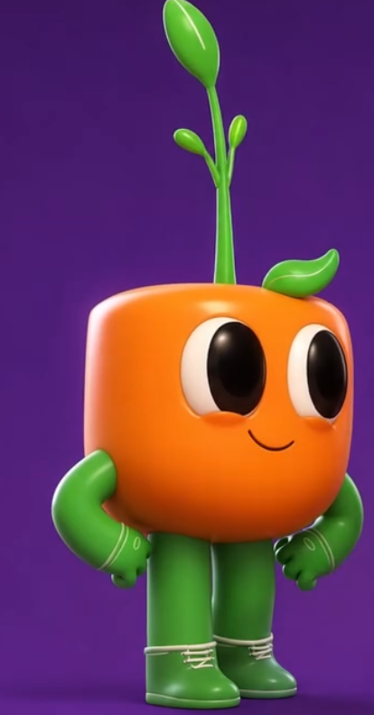

Tunic Style
Sprout Island Prototype
VIDA
ENERGIA
REFERENCIA ORIGINAL

Vista Estudio Close-Up (C)
Regenerar Mapa (R)
W
A
S
D
o
Flechas
Caminar / Correr |
C
Vista Estudio Close-Up
Espacio
Brincar |
Shift
/
K
Rodar (Dodge Roll)
Click Izq
o
J
Ataque / Romper |
E
Giro de Hojas (Especial)
R
Regenerar Arbustos y Cuadraditos |
Rueda Mouse
Zoom
▲
▼
◀
▶
💨
Rodar
🌪️
Giro E
⬆️
Brincar
⚔️
Atacar